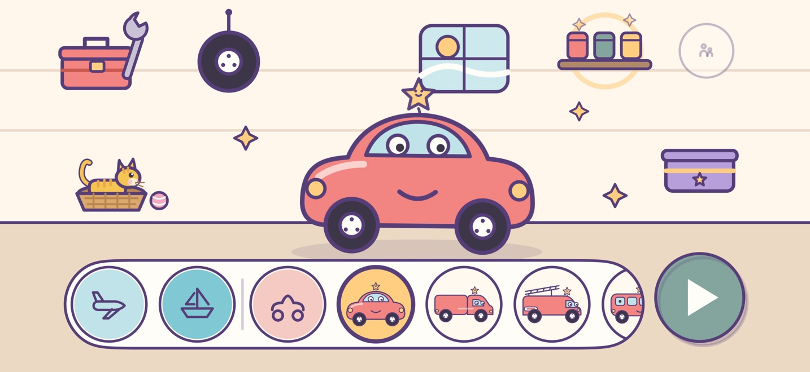
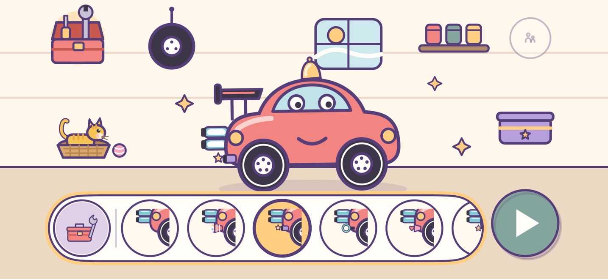
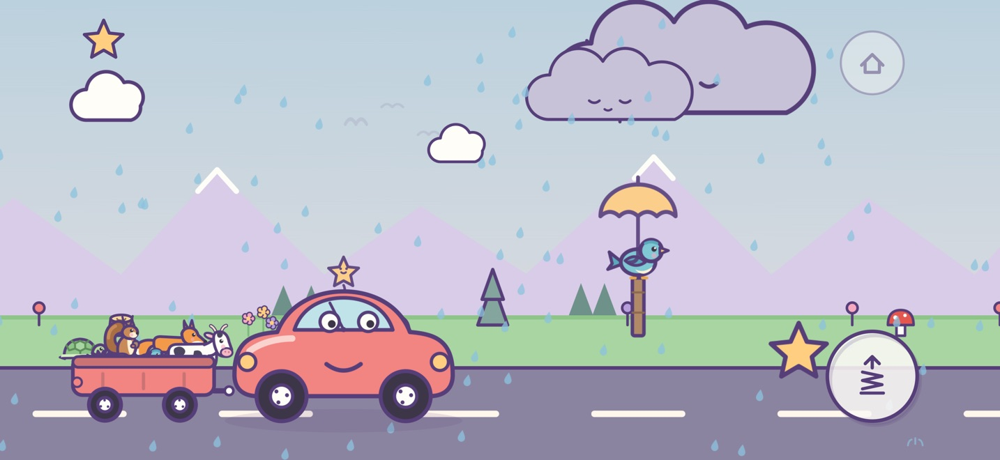
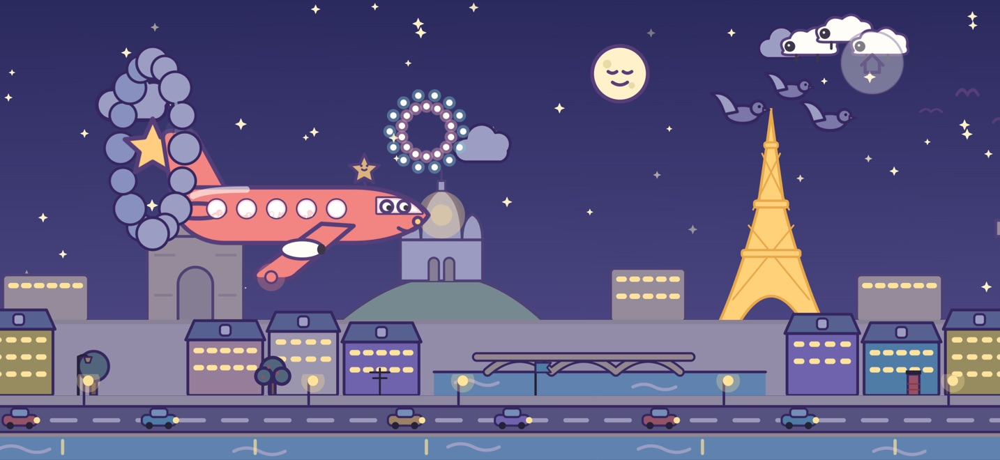
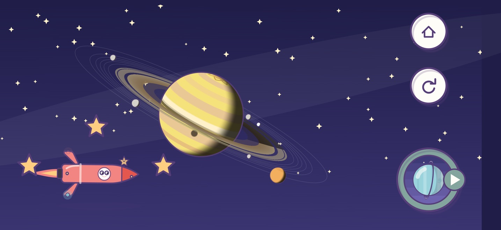
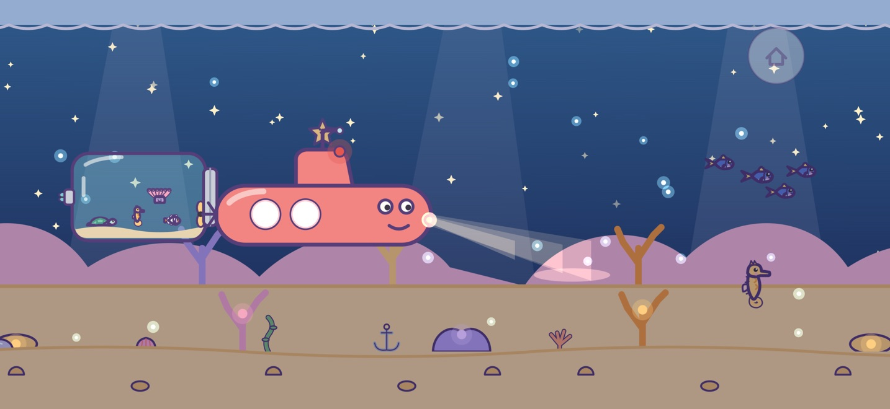
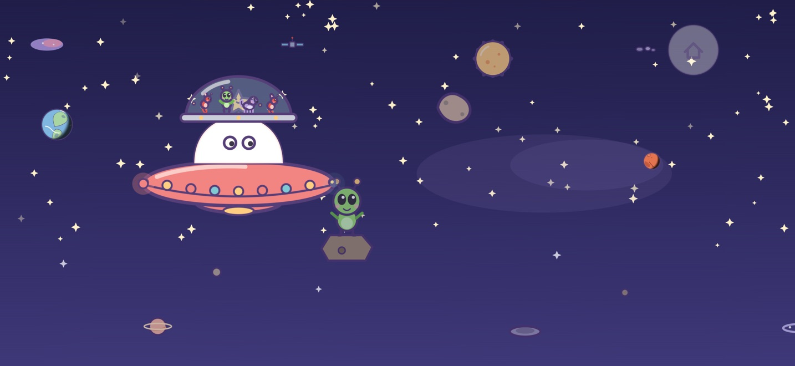

Beepika: macchinine per bimbi
Camion, aerei, razzi e barche








Beepika è un primo gioco delicato su macchinine, aerei e barche per bambini dai 2 ai 5 anni. Costruisci il tuo veicolo, scegli dove andare e parti. Non c’è niente da leggere, nessun timer e non si perde mai: a ogni tocco risponde un bip allegro, un saltello o uno scintillio.
COSTRUISCI IL TUO VEICOLO
• Scegli carrozzeria, colore, ruote e decorazione: ogni combinazione funziona
• Personalizzalo in officina: motore, propulsore, alettone, luci e, al posto del fumo, una festa che esce dallo scarico — coriandoli, fuochi d’artificio, bolle di sapone, cuoricini, farfalle, note musicali e altro ancora
• Tocca il tuo veicolo e ogni volta farà un’acrobazia nuova: ognuno ne ha otto tutte sue; un grande pulsante lo fa saltare fino alle stelle più alte
• In ogni stanza vive un animaletto amico: in garage, nell’hangar e al molo. Con un razzo l’hangar diventa una stazione spaziale, con un sottomarino il molo diventa una base sottomarina
VAI DOVE VUOI
• Guida nel bosco, lungo la spiaggia, sulla neve, nel deserto e nei paesi delle fiabe
• Sorvola città con monumenti famosi e vola verso ogni pianeta del Sistema solare, poi guardalo girare mentre le sue lune gli ruotano intorno
• Naviga su fiumi e mari, tuffati tra barriere coralline, navi affondate e grotte di cristallo, e guida il sottomarino su e giù con il dito
• Tocca il sole e il giorno diventa notte; cadono le foglie, brillano gli arcobaleni e passano le stelle cadenti
PORTA CON TE TUTTI GLI ANIMALI
• Gli animali vivono lungo la strada, sui rami, in cielo e sott’acqua: ognuno si riconosce subito e risponde al tocco con la sua voce
• Prendi un animale qualsiasi e salterà in un rimorchio, una zattera, un cestino, un acquario o un modulo spaziale; l’autobus, l’aereo e il dirigibile portano i passeggeri ai finestrini
• Piccoli alieni gentili fluttuano vicino a ogni pianeta: il disco volante li solleva con il suo raggio
• All’arrivo tutti i passeggeri saltano giù e salutano con la mano
PENSATO PER LE MANINE
• Pulsanti grandi, solo in orizzontale, non serve saper leggere
• Suoni e una leggera vibrazione rispondono a ogni tocco
• Funziona offline, ovunque: in macchina, in aereo, dalla nonna
• Etichette VoiceOver e supporto per «Riduci movimento»
GIOCA GRATIS, UN SOLO ACQUISTO PER TUTTO
Gratis: la berlina, il camioncino, il camion dei pompieri e la slitta volante di Babbo Natale trainata da due renne, tutti i colori, il bosco e la spiaggia con i loro animali, la mappa innevata «Fiaba di Natale» da sorvolare, la modalità notte, il meteo e le stagioni, più una sbirciatina al molo.
«Sblocca tutto» apre tutti i 28 veicoli — auto e mezzi speciali, aerei, razzi e un disco volante, barche e sottomarini — ogni pezzo dell’officina, ogni ruota e decorazione, e tutte le 47 mappe: paesi delle fiabe, otto città, il Sistema solare, i mari e il mondo sottomarino. Acquisto unico, condivisibile con i familiari tramite «In famiglia». Nessun abbonamento.
SICURO PER I BAMBINI
• Niente pubblicità, tracciamento, analisi o account
• I progressi vengono salvati solo su questo dispositivo; nulla viene inviato a noi o ad altri
• L’acquisto è protetto da una verifica per i genitori
• Nessun link che porta fuori dal gioco
Domande o idee? Visita la pagina di assistenza: leggiamo ogni messaggio.